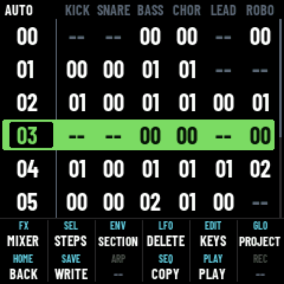
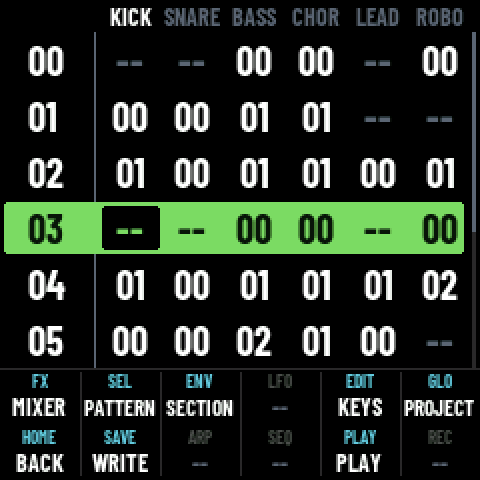
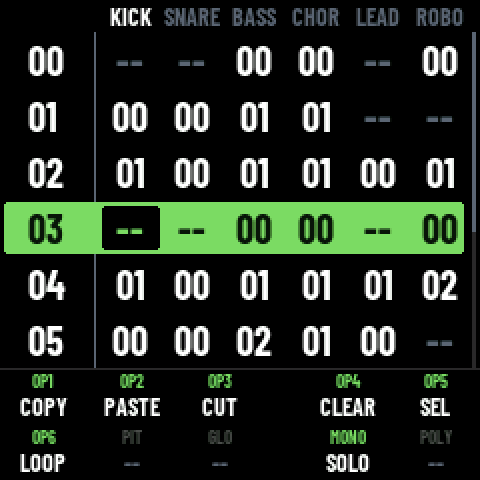
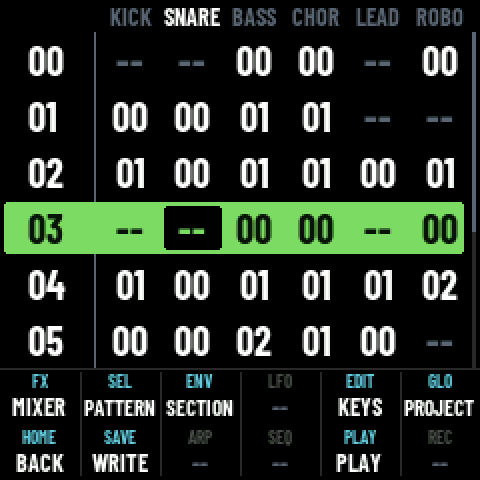
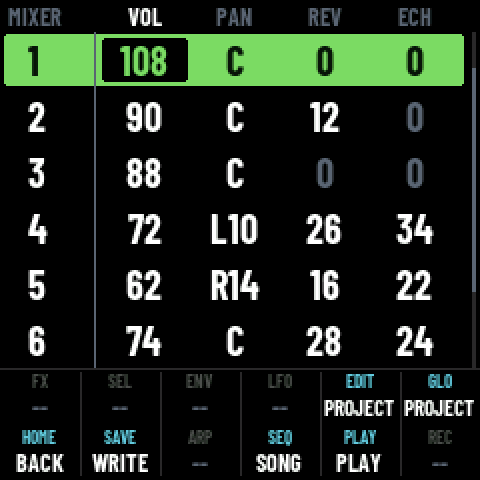
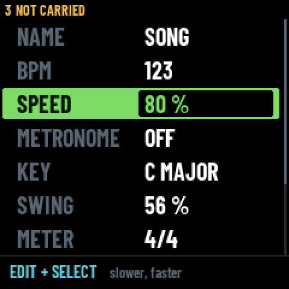
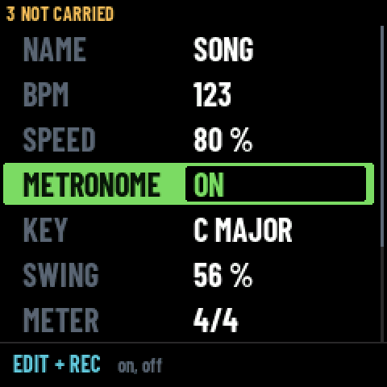
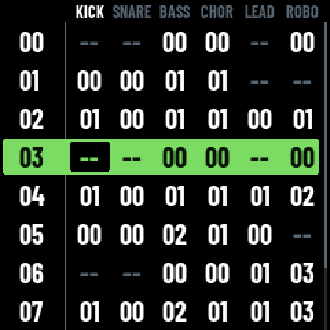

The help, worn on the screen
HELP was a screen you left your work to read. The coat is the other thing: you switch it on, the view stays the view, and the foot of the panel says what the twelve buttons do right now — which changes as the cursor moves. It stays on until you switch it off. OCT− and OCT+ together put it on and take it off.
Four screens wear it: SONG, PATTERN, MIXER, and PROJECT through two rows of its own. Every picture below with a foot on it is the machine's framebuffer, not a drawing — the two hand-drawn ones are marked, and they are the argument that came before the thing.
The one chord the panel had left
Every button on this machine acts on its press — app/ui.h says
it plainly: EDIT is the only one that can be held. No modifier can be pressed before a
second button without its own action going off first: HOME + anything has already
stepped back, SAVE + anything has already saved.
OCT− and OCT+ are the exception, and by accident. Every screen reads them in the
same frame and in opposite directions, so the two together move the keyboard's octave by exactly
nothing. The chord is read in app/app.c before any screen sees the frame, and the
two buttons are rubbed out of it, so even that nothing never happens.
It changes under the cursor
A fixed list of shortcuts says what exists somewhere. This says what is possible here. The two pictures are the same screen, the cursor moved one column: off the phrase number onto a pattern cell, and SEQ and LFO go dark — they copy and delete a phrase, and there is no phrase under the cursor any more — while SEL stops saying STEPS and says PATTERN.


A dash is information. A cell with a name and nothing under it means something else: there is a gesture here and the word would not fit at any size. Two states, two readings — the first build had one blank cell doing both jobs, and it read as dead.
The foot becomes the keyboard itself
While EDIT is down the twelve are not what the hand is about to press — the black keys are. So the foot swaps. The first build laid them in a flat row of six and he could not read it; it is the keyboard's own shape now (his design): a row of the foot is one octave, three keys together then two, so a key is found by its place in the group rather than by counting. Row one is F#3 G#3 A#3 then C#4 D#4, row two the octave above.
All ten are drawn. PIT, GLO and POLY are printed on the panel (NOTES.md, 29/10) and command nothing, so they say —. F#5 opens a third octave no OP lives in and is left out. The foot follows the CAPS LOCK rather than the thumb, so a tap of EDIT leaves the keys up until it is tapped again — a state only the EDIT LED used to tell.

Three views, three feet
PATTERN is the screen the coat earns its two rows on. It is three views of the same steps, and that is what moves: the view you are not in is the button that goes there, so FX goes dark on the effects and SEQ goes dark on the notes. ARP offers the chords only where the keys play notes. And SEL opens something only where there is something to open.



LFO is dark on all three. It does nothing on this screen at all, and the cell is drawn to say so: learning that a button is never for you here is worth a cell.
Eleven dashes are the truth
MIXER was the last screen with ui_shift, so the last where the EDIT
layer existed without the foot naming it. Six of its twelve cells are dashes: this screen is
knobs and MONO, and the foot saying so plainly is the most useful thing it can say about it.
EDIT carries PROJECT there — on MIXER the tap goes to the project and never latches, so
the guide leaves the LED dark while the cell can say it.

The slow way in, teaching the fast one
Two gestures had no home on the foot because they are not of the moment: the listening speed and the metronome, both EDIT held plus something. They are rows of PROJECT now, straight under BPM, and the foot says the gesture for the row the cursor is on (his design). You find the thing by the slow path and the screen hands you the fast one — which is how anyone has ever graduated from menus to shortcuts.
Neither is written to the file: player_init puts both back when a project opens,
and neither dirties the song nor enters UNDO. A rule marking them off was tried and taken out:
the foot already makes the distinction.


A foot, and not a frame
These two are hand-drawn, over SONG's own measurements — a 16 px head and rows of 28. They are what the decision was made on. SONG fills the panel to the pixel, so the help has to take: two rows of 28 at the foot leave six phrases instead of eight.
A frame on four sides was the other idea. A column down each side costs a third of the width to hold two labels nobody can read sideways. The foot costs less and buys more, because the panel's buttons are two rows of six: draw two rows of six and the cell you read sits where the button sits under your thumb. Top right on the screen is top right under your hand.

Five things no drawing could say
- The twelve read as one word. SEL saying PATTERN and ENV saying SECTION, side by side, each filling its cell: on the panel they ran together. There is a rule between the cells now, which also makes the grid read as a grid.
- A word too wide drops a size, then another. CONDENSED 12, then 11, then 9 — the name's own size — before it is given up. SYLLABLE fits at none of the ordinary sizes and is perfectly readable at the last one. It is never shortened: an abbreviation nobody reads is worse than nothing.
- A blank cell was saying two things at once. The first build dropped the name along with the word, so SEL on the effects read as dead while it opened the syllable. The name is always drawn now, and a button with nothing to do says —.
- The CAPS LOCK became visible, unasked. EDIT tapped latches the black keys on. The foot follows the latch, so it stays on the keys until EDIT is tapped again.
- A song with sections costs more than two rows. A section marker takes a slot, so six rows of LEOMOTEUR show four phrases and two markers. The drawing could not have known.
Two faults that were not faults
- GESTURES already documents EDIT held + REC and EDIT held + SELECT. I had read the SONG, PATTERN and PHRASE pages and concluded the gestures were written nowhere but PATTERN. The page that exists for what is true everywhere is where they were.
- The listening speed already goes back to 100.
player_initdoes it, and it runs whenever a project is adopted. I had readui_speed, which only applies the speed, and concluded nothing reset it. There is no trap to close.
What is not done
- PHRASE and INSTRUMENT wear nothing and keep their eight rows, switched on or not.
INSTRUMENT has no
ui_shift; PHRASE is a screen whose future is its own question. - The pages are still flat. SONG's HELP page is forty-four lines with no grouping. The coat answers the moment; the reference still reads like a dump.
- The metronome is a knob, not a toggle. Right for ON, left for OFF, consistent with every other row of PROJECT and perhaps wrong for a thing with two states.
- Six characters a cell remains the budget, and the vocabulary has to be built inside it. Each word is one more thing to keep true as the screens change.